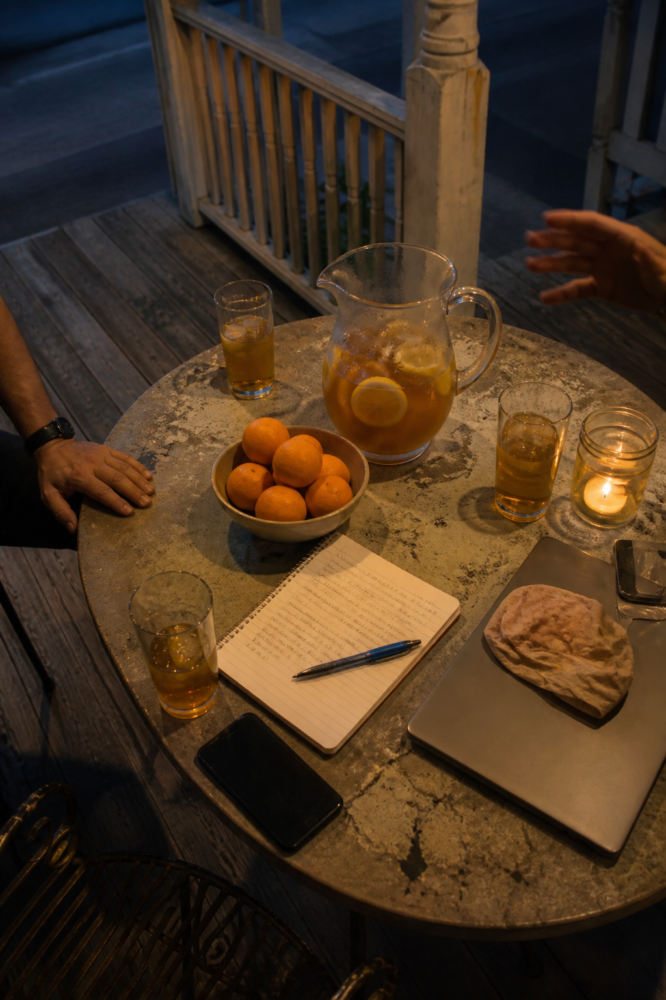
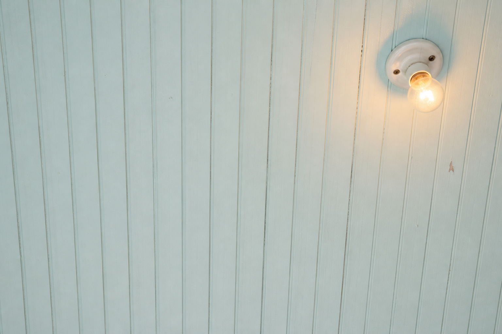

What this is
Once a month a few dozen people get together for two hours and show each other what they've been making with AI.
Teachers, lawyers, nurses, restaurant managers, people who run a one-person business out of a spare room. Some have been at it for a year. Some opened ChatGPT for the first time last week and haven't told anybody.
Nobody presents from a stage. Somebody puts a laptop on the table and the rest of us lean in. Then we eat something and keep talking.
Between Fridays, everyone hangs around in Slack.
What people are making
Four things members brought to a recent Friday. None of them write code.

-
A bot that does the first ten minutes of a client call
Renée, family law, Mid-City
It asks the same questions she always asks, writes the answers up, and has a file waiting before she picks up the phone.
-
Lesson plans that still sound like her
Dominique, seventh-grade science, Algiers
She fed it two years of her own worksheets. Now it drafts and she edits for ten minutes instead of ninety.
-
A schedule that stops texting people on their day off
Tuan, a restaurant on Freret
Twenty-two employees, everybody's availability, one group thread. It builds the week in about a minute.
-
Every grant deadline, out of one person's head
Alice, a neighborhood nonprofit, Central City
It reads the funder emails, pulls the dates, and tells three people on Monday what's due Friday.
What you'll leave with
One
Something you can use on Monday
Every Friday somebody shows a small trick that saves them an hour a week. You'll get at least one, written down, that works on your actual job.
Two
Three people who do what you do
We do introductions on purpose, out loud, at the start. You'll leave knowing who to text the next time you get stuck at 11pm.
Three
A straight answer about what this stuff can't do
Half of what you've read is oversold. We're honest about the parts that don't work yet, so you stop wondering if you're the problem.

Come by anytime
The light stays on between meetups. Slack is where people post what they're working on, ask the question they'd feel silly asking out loud, and get an answer before lunch.
Join the Slack